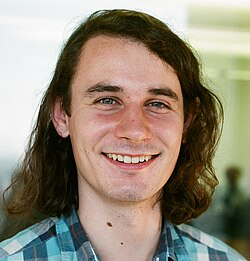

1987-
Peter Scholze

Portrait: George Bergman, CC BY-SA 4.0, Wikimedia Commons.
Events (3)
- 2011Perfectoid spaces and tilting (Scholze)
developer · Number theory
- 2019Condensed mathematics
originator · Category & homological algebra
- 2021Fargues-Scholze geometrisation of the local Langlands correspondence
developer · Number theory